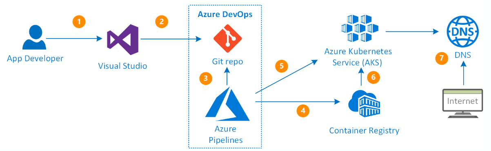

3.3. Automation¶
To perform the tasks of building and deploying microservices in different environments, we have created a list of Azure Pipelines that will allow us to automate these tasks and perform them in a more secure way.
Thus, these pipelines will be organised in this way for each environment:
- Development environment. Each project (microservice) will have its own pipeline that will: access the code repository, use the code from the develop branch, use the manifest files defined in this directory and perform the build and deploy tasks on the Container Registry and the AKS of the development environment.
- Test environment. It consists of a single pipeline located in the private repository Dx29.EnvTest. This will define all the stages to be performed on the microservices to be published in test: those of build and those of deploy. To do so, it will access the code of the repository containing the project associated with the microservice you want to work with, it will use the code available in its main branch, and then it will use the manifests files found in the Dx29.EnvTEST repository to perform the build and deploy tasks on the Container Registry and the test AKS.
- Production environment. This environment shares Container Registry with test, so that it will only access it to obtain the images already generated and compiled to be used in the production environment, that is to say, it will not perform build tasks, only deploy. It consists of only one pipeline located in the private repository Dx29.EnvPRO. This will define the deployment stages to be performed on the microservices to be published in production. To do this, it will access the Test Container Registry, take the corresponding image and deploy it to the production AKS.
With this in mind, we will now go on to define a generic pipeline for a microservice, that is, how the build and deploy tasks have been performed on it:
- If we take into account that we are working on a single repository where both the code and the necessary manifest files are located:
trigger:
- develop/main
resources:
- repo: self
variables:
# Container registry service connection established during pipeline creation
dockerRegistryServiceConnection: <secret>
imageRepository: <image_name>
containerRegistry: <acr_server>
dockerfilePath: <path_Dockerfile>
tag: <image_tag>
imagePullSecret: <image_pull_secret_AKS>
# Agent VM image name
vmImageName: 'ubuntu-latest'
stages:
- stage: Build
displayName: Build and push stage
jobs:
- job: Build
displayName: Build
pool:
vmImage: $(vmImageName)
steps:
- task: Docker@2
displayName: Build and push an image to container registry
inputs:
command: buildAndPush
repository: $(imageRepository)
dockerfile: $(dockerfilePath)
containerRegistry: $(dockerRegistryServiceConnection)
tags: |
$(tag)
- upload: manifests
artifact: manifests
- stage: Deploy
displayName: Deploy stage
dependsOn: Build
jobs:
- deployment: Deploy
displayName: Deploy
pool:
vmImage: $(vmImageName)
environment: <environment_name.namespace>
strategy:
runOnce:
deploy:
steps:
- task: KubernetesManifest@0
displayName: Create imagePullSecret
inputs:
action: createSecret
secretName: $(imagePullSecret)
dockerRegistryEndpoint: $(dockerRegistryServiceConnection)
- task: KubernetesManifest@0
displayName: Deploy to Kubernetes cluster
inputs:
action: deploy
manifests: |
$(Pipeline.Workspace)/manifests/deployment.yml
$(Pipeline.Workspace)/manifests/service.yml
imagePullSecrets: |
$(imagePullSecret)
containers: |
$(containerRegistry)/$(imageRepository):$(tag)
- If we are in the repository that contains the manifest files but we need to access another repository to obtain the project code:
We must configure teh repository as a resource of the pipeline, before any stage has been declared:
resources:
repositories:
- repository: <repository_name>
name: <repository_name>
type: git
ref: <branch>
Add- checkout: <repository_name>before execute the task (steps).
- If we want to deploy several microservices (as in the case of test and prod) we can organise the stages in different files or templates accessed by the main pipeline:
Configure the pipelines stages as:
stages:
- template: <template_path_and_name>.yml
parameters:
<input_parameters_template> (i.e. vmImageName: $(vmImageName))
In template.yaml only configure the stages:
stages:
- stage: Build
[...]
And use the inout parameters as:${{parameters.vmImageName}}
- If we want to work with the input parameters in a pipeline execution, we have to add: We can use the runtime parameters as the guide describe:
parameters:
- name: tag
displayName: Tag
type: string
default: 'v0.00.00'
- If we want to work with pipeline variables that will share several templates, i.e. organise the variables in a single file:
As with the pipeline stage definition templates, variables can also be configured within another file. This file will be in the format:
variables:
# Container registry service connection established during pipeline creation
dockerRegistryServiceConnection: <secret>
containerRegistry: <acr_server>
dockerfilePath: <path_Dockerfile>
imagePullSecret: <image_pull_secret_AKS>
# Agent VM image name
vmImageName: 'ubuntu-latest'
environment: <environment_name.namespace>
# Images
imageRepositoryX: <imageX_name>
And it will be imported into the main pipeline as:
variables:
- template: <path_and_varsFileName>.yaml